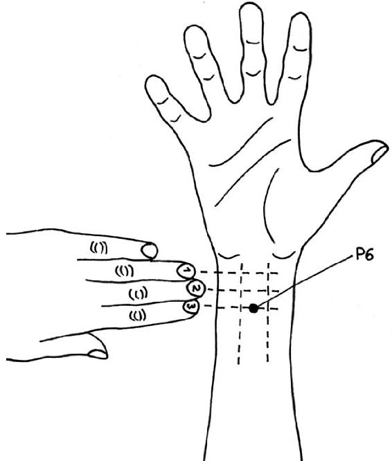

IF YOU TOOK a hundred people on the verge of vomiting, you would have a very mixed group. Person number 14 is on a rollercoaster, hands high in the air, person 32 is cursing the egg salad she ate, number 77 is holding a pregnancy test in disbelief, and number 100 has just read the words “may cause nausea and vomiting” in the leaflet that came with his new medication.
Vomiting is not a stomach stumble: it happens according to a precise plan. It is a tour de force performance. Millions of tiny receptors test our stomach contents, examine our blood, and process impressions from the brain. Every piece of information is gathered in the huge fibrous network of our nervous system and sent to the brain. The brain evaluates this information. Depending on how many alarm bells are ringing, it makes a decision: to barf or not to barf. The brain transmits its decision to selected muscle groups, and they get down to work.
If you were to X-ray the same hundred people while they were vomiting, the picture would be the same a hundred times over. The brain responds to the alarm, activates the area responsible for vomiting, and switches the body to emergency mode. We turn pale as the blood drains from our cheeks and is sent to the abdomen. Our blood pressure drops and our heart rate falls. Finally, we feel that unmistakable sign: saliva, and lots of it. The mouth begins producing saliva in great quantities as soon as it receives information from the brain about the emergency that’s underway. This saliva is meant to protect our teeth from the corrosive effects of the gastric acid they are about to come into contact with.
To begin with, the stomach and gut move in small, nervous waves—shoving their contents in completely opposite directions as they begin to panic slightly. We cannot feel this to-and-fro as it takes place in the realm of smooth muscle; however, this is about the time that most people realize intuitively that they should seek out a suitable receptacle.
An empty stomach is no defense against vomiting, since the small intestine is just as able to expel its contents. For this to happen, the stomach opens the gate to allow the contents of the small intestine back in. Every member of the team works together to bring this major project to completion. When the small intestine suddenly sweeps its contents into the stomach, sensitive nerves there are stimulated. These nerves respond by sending signals to the vomit control center in the brain. Now there’s no doubt about it: everything is ready for the big heave.
Our lungs take a particularly large breath before our airways are closed. The stomach and the opening to the esophagus suddenly relax and—bam!—the diaphragm and abdominal muscles abruptly press upward, squeezing us like a tube of toothpaste. The entire contents of the stomach are then propelled from the body like a pilot in an ejector seat.
Why We Vomit and
What We Can Do to Prevent It
THE HUMAN ANIMAL is especially designed to be able to vomit. Other animals with this ability include apes, dogs, cats, pigs, fish, and birds. Those that are not able to vomit include mice, rats, guinea pigs, rabbits, and horses. Their esophagus is too long and narrow, and they lack the nerves that are so talented at vomiting.
Animals that cannot vomit have to have different eating habits from ours. Rats and mice nibble at their food, biting off tiny pieces to test their suitability. They only continue to eat when they are sure the trial nibble has not done them any harm. If it turns out to be toxic, the most they suffer will be a bout of stomachache. They also learn not to eat it again. Furthermore, rodents are much better than us at breaking down toxins because their liver has more of the necessary enzymes. Horses, however, are not even able to nibble. If something bad ends up in their small intestine, the results can often be life threatening. So, really, we have reason to be proud of our body’s abilities whenever we find ourselves crouched over the toilet bowl “throwing our guts up.”
The short rests between retches could be utilized for a little reflection. Person number 32’s notorious egg salad seems to have held its form surprisingly well when it returns from its short sojourn in the realm of the stomach. A few pieces of egg, the odd pea or piece of pasta are still recognizable. It might cross 32’s mind that she can’t have chewed it very well. Moments later, another retch produces rather more deconstructed arrangement. Vomit that contains recognizable bits of food is almost certain to have originated from the stomach and not from the small intestine. The smaller the particles, the more bitter the taste, and the more yellow the color, the more likely it is to be a salutation from the small intestine. Clearly identifiable food may not have been chewed properly, but at least it has been ejected from the stomach quickly, before making it as far as the small intestine.
The way we vomit also tells us quite a bit. Sudden vomiting that comes in a violent surge almost without warning is likely to be caused by a gastrointestinal virus. This is due to the fact that the sensors count how many pathogens they encounter and when they decide the numbers have got out of hand, they slam on the emergency brakes. Below this threshold, the body’s immune system could likely have dealt with the situation, but now the job is handed over to the gastrointestinal muscles.
Food poisoning and alcohol poisoning also cause vomiting in surges. However, this time we usually get a fair warning beforehand, in the form of nausea. The feeling of nausea is the body’s way of telling us that the food we have eaten is not good for us. Person 32 is likely to be much more wary of that bowl of egg salad on the buffet in future.
Person 14 on the rollercoaster feels just as nauseous as number 32 of egg salad fame. Rollercoaster puking is basically the same as travel sickness. In this case, no toxins are involved, yet sick still ends up on people’s shoes, in the glove compartment, or splattered on the back window by the force of momentum. The brain is the bodyguard of the body—guarding it meticulously and cautiously, especially when the body belongs to a small child. Currently, the best explanation of motion sickness is this: when the information sent to the brain from the eyes is at odds with that sent by the ears, the brain cannot understand what is going on and slams on every emergency brake at its disposal.
When a passenger reads a book in a moving car or train, their eyes register “hardly any motion,” while the balance sensors in the ears say “lots of motion.” It’s the same, but opposite, effect as when you watch the trees whizz by when driving through a forest. If you move your head a little as well, it looks as if the trees are rushing by faster than you are actually moving—and that, too, confuses the brain. On an evolutionary scale, our brains are familiar with such mismatches between eyes and balance sensors as signs of poisoning. Anyone who has ever drunk too much or taken drugs will have felt the room spinning, even when they are not moving at all.
Vomiting can also be caused by intense feelings such as emotional strain, stress, or anxiety. Under normal circumstances, we synthesize the stress-response hormone CRF (corticotropin-releasing factor) in the morning, creating a supply to help face the challenges of the day. CRF helps us tap into energy reserves, prevents the immune system from overreacting, and helps our skin tan as a protective response to stress from sunlight. The brain can also inject an extra portion of CRF into the bloodstream if we find ourselves in a particularly upsetting situation.
However, CRF is synthesized not only by brain cells, but also by gastrointestinal cells. Here, too, the signal is—stress and threat! When gastrointestinal cells register large amounts of CRF, irrespective of where they originate (in the brain or in the gut), the information that one of the two is overwhelmed by the outside world is enough for the body to react with diarrhea, nausea, or vomiting.
When the brain is stressed, vomiting expels partly digested food in order to save the energy required to complete the digestive process. The brain can then use that energy to solve the problems at hand. When the gut is stressed, partly digested food is ejected either because it is toxic or because the gut is currently not in a position to digest it properly. In both cases, it can make good sense to press the eject button. There is simply no time for gentle, comfortable digestion. When people throw up from nerves, it is simply their digestive tract trying to do its best to help.
Incidentally, petrels use vomiting as a defense strategy. Vomiting is a sign from the plucky little birds to steer well clear of their nests. Researchers use that to their advantage. They approach a petrel’s nest holding out a barf bag, and the seabird pukes right into it. Back at the lab, they can test the petrel vomit for anything from the presence of heavy metals to the variety of fish it contains. This gives them a measure of how healthy the environment is.
The following includes some simple strategies for reducing unnecessary attacks of vomiting.
1.For travel sickness, keep your eyes fixed on the horizon far ahead. This helps the eyes and balance sensors coordinate their information better.
2.Listen to music on headphones, lie on your side, or try relaxation techniques—some people find this helpful. One possible explanation for this is that all these activities are generally calming. The more secure we feel, the less we encourage the brain’s state of alarm.
3.There are now quite a few studies proving that ginger has a beneficial effect. Substances contained in root ginger block the vomit center of the brain and the feeling of nausea along with it. Many ginger candies, however, contain only ginger flavoring, so make sure anything you take contains the genuine stuff.
4.Drugs you can buy from the pharmacy to prevent vomiting work in various ways. They can block the receptors in the vomit center (the same effect as ginger), numb the nerves of the stomach and gut, or suppress certain alarm signals. The drugs in the last group are almost identical to drugs used to treat allergies. Both suppress the alarm-signal transmitter histamine. However, the drugs used to prevent vomiting have a much stronger effect on the brain. Modern allergy drugs have been developed and improved to such a degree that they barely dock in the brain at all. This interaction with the brain is what makes the suppression of histamines cause drowsiness.
5.P6! This is an acupuncture point that is now recognized by Western medicine as effective against nausea and vomiting. Its benefits have been proven in more than forty studies, including placebo-controlled trials. Doctors do not know how or why P6 works. The point is located two to three finger-breadths below the wrist, right between the two prominent tendons of the lower arm. If you don’t happen to have an acupuncture needle handy, you can try gently stroking the skin at that point until symptoms improve. This technique has not been proven in scientific studies, but it may be worth trying a little self-experimentation. In traditional Chinese medicine, stimulating this point is believed to activate the energy pathway, or meridian, running up the arm and through the heart, which relaxes the diaphragm and then runs on through the stomach and into the pelvis.

NOT EVERY STRATEGY will work for all causes of nausea. Remedies like ginger, pharmacy-bought medicines, or P6 can help, but for vomiting caused by emotional factors, the best thing is often to build a safe nest for your own inner petrel. Relaxation techniques or hypnotherapy (from a reputable practitioner!) can help train the nerves to be more thick-skinned. The more often and the longer you practice, the better you will get. Silly stress at the office or exam-related anxiety become less threatening when we refuse to let these stressors affect us so personally.
Vomiting is never a punishment from the stomach! Rather, it is a sign that our brain and our gut are willing to sacrifice themselves to the ultimate extreme for us. They protect us from unseen toxins in our food, are overcareful when faced with travel-related eye–ear hallucinations, and save energy to deal with imminent problems. Nausea is meant to give us an orientation for the future, letting us know what is good for us and what is bad.
If you are unsure about the cause of your nausea, it is a good idea to simply trust your gut feeling. The same principle applies when you have eaten something bad but don’t feel the need to vomit. You should not force the situation with a finger down your throat, by drinking salt water, or by having your stomach pumped. Taking acidic or foaming chemicals can cause more problems than it solves. Foam can easily migrate from the stomach to the lungs, and acidic drugs may simply burn the esophagus for a second time. For these reasons, induced vomiting is no longer a technique normally recommended for use in modern emergency medicine.
True nausea is a program that has evolved over many millennia—it has the ability to wrest the reins of control from our conscious mind. The conscious mind often reacts to this drastic takeover with shock and indignation. It was blithely planning to order another round of tequila shots—and now this? But, since it is often the conscious mind that got the body into this vomitous situation in the first place, it eventually has to back down. If vomiting is caused by an unnecessary, overcautious reaction, the conscience mind can always return to the negotiating table and play its anti-vomiting aces.